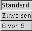
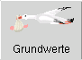
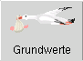

| Originalregeln: Ist diese Option aktiviert, so werden die Orignalregeln der 4. Auflage des Midgardregelwerks angewandt. Ist die Option deaktiviert, können eigene Hausregeln verwendet werden. Wenn diese Option aktiviert ist, ist das offizielle Midgardlogo sichtbar. Defaulteinstellung: aktiv |
 |
| NSC zulassen:: Ist diese Option aktiviert, so können vom Spielleiter Figuren nach eigenen Ideen entworfen werden. Defaulteinstellung: deaktiviert |
|
| Grundwerte mit nur einer Maustaste auswürfelbar machen Ist diese Option aktiv, so können die Grundwerte mit nur einer Maustaste ausgewürfelt werden. MAGUS unterstützt drei Maustasten, unter Windwos sind jedoch nur 2 Tasten üblich und eine vorhandene dritte Taste wird nicht einheitlich unterstützt. Defaulteinstellung: aktiviert |
 |
| Wizard bei jedem Programmstart starten Ist diese Option aktivert, wird der Wizard beim Programmstart mitgestartet. |
 -> 
-> 